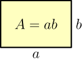
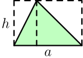

Old Basics Page¶
What is this page?!
I'm in the process of rewriting most things in this tutorial, because I realized how crappy and beginner-unfriendly it was after helping a beginner. I have rewritten most of the basics page (see the new basics page), but not all of it, and this page contains the things that I haven't rewritten yet.
Constants¶
A value is considered to be a constant if it doesn't depend on $x$. For example, $2x$ is not a constant, because it gets different values depending on $x$; for example, if $x=3$, then $2x=6$, and if $x=4$, then $2x=8$. On the other hand, things like $3$, $4$ and $\pi = 3.14159...$ are constants.
Absolute Value¶
The absolute value of $x$ is $|x|$ in math and something like abs(x) or
Math.abs(x) in most programming languages. It's easiest to think of the
absolute value as stripping off the minus sign. For example, $|2| = 2$ and
$|-3| = 3$.
Powers and Square Root¶
$x^y$ is x**y or pow(x, y) and $\sqrt x$ is sqrt(x) in most
programming languages.
It's easiest to think of $\sqrt x$ as the non-negative number that is $x$ when multiplied with itself. For example, 3 is not negative, so $\sqrt 9 = 3$ because $3 \cdot 3 = 9$. Similarly e.g. $\sqrt 4 = 2$, $\sqrt 1 = 1$ and $\sqrt 0 = 0$.
The $(-x)^2=x^2$ and $\sqrt{x^2}=|x|$ rules probably seem confusing, but an example should make everything clear:
$$\begin{align}(-2)^2 &= (-2)(-2) = -(-(2 \cdot 2)) = 2 \cdot 2 = 2^2 \\ \sqrt{(-2)^2} &= \sqrt{2^2} = \sqrt 4 = 2\end{align}$$This means that $x^2$ is never negative because $x^2$ can be always turned into a positive number multiplied by itself, and that's obviously positive. We have just 1 exception, and that's $0^2 = 0 \cdot 0 = 0$. This also shows that we can't do e.g. $\sqrt{-1}$.
Functions¶
Here's a typical math function:
$$\begin{align}f(x) &= 2x \\ f(6) &= 2 \cdot 6 = 12\end{align}$$There is no special syntax for defining a function. All we have is the equal sign, and when defining a function we just say that its value at x is equal to something.
If you're familiar with a functional programming language like Haskell, then you'll probably realize that the above math looks a lot like this Haskell session:
Prelude> let f x = 2*x
Prelude> f 6
12
Prelude>
If you're feeling like WTF is this, here's a Python session that should make everything clear.
>>> def f(x):
... return 2*x
...
>>> f(6)
12
Quick note about f(x) versus f x: if you define your own function
called $f$ or $g$ you should use $f(x)$, but you can do e.g. $\sin x$ or
$\cos x$ with some "special" functions for historical reasons. This tutorial
uses $\sin(x)$ and $\cos(x)$ everywhere because most programmers are familiar
with that.
Areas¶
If you are a programmer you'll probably understand areas best as the number of pixels in a shape. For example, if you create a GUI program that creates a 300 by 200 window, it contains $300 \cdot 200 = 60000$ pixels.
The yellow area is simple, but the triangle area is also easy to understand. Let's draw a rectangle around the triangle like this:

Now you can see that the triangle splits both pieces of the rectangle in half, so the triangle area must be half of the rectangle area $ah$.
Volumes¶
A volume is a similar thing as an area, but for 3D things. If our 300 by 200 window was 50 pixels deep, then $300 \cdot 200 \cdot 50 = 3000000$ pixels would fit inside it.

The $V=abc$ thing is actually just a special case of the $V=Ah$ cylinder. The shape of the cylinder's base can be anything, and in the $abc$ thing the base area is $ab$ and the height is $c$.